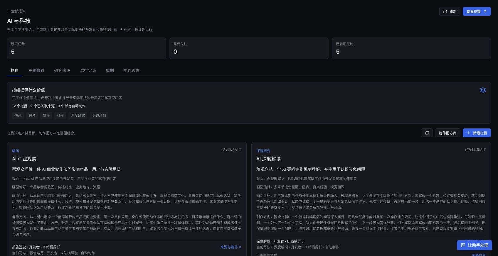

软件 / 工作流
研映 Research2Video
从研究到视频
围绕栏目持续研究、写稿、制作视频，并管理多平台投稿的本地创作工作台。
开发中 仍在开发中，功能和界面会继续变化，不是正式发布的产品。

这是什么
以矩阵与栏目组织受众、来源、观看收获与制作设置。从具体问题、研究报告或已有文稿出发，将底稿和原始素材转成口播、配音、画面、字幕与成片；内嵌助手可以调用同一套业务能力，日常操作也可通过网页完成。
核心功能
- 按矩阵与栏目管理研究任务、信息源和周期调度
- 研究底稿结合原始素材写稿，保留文稿版本和成片记录
- 来源截图、局部聚焦、数据图形与旁白字幕同步
- 整期节目或独立单条，定稿后可沿原稿重新出片
- B 站、抖音、快手、小红书的发布包、投稿队列与作品记录
- 研映助手直接查询和管理来源、研究、制作与发布工作
说明
完整生产环境主要在 macOS / Apple silicon 上验证；模型、配音服务与平台账号需自行配置。
界面截图
